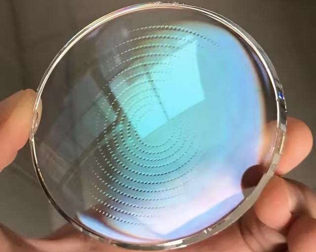
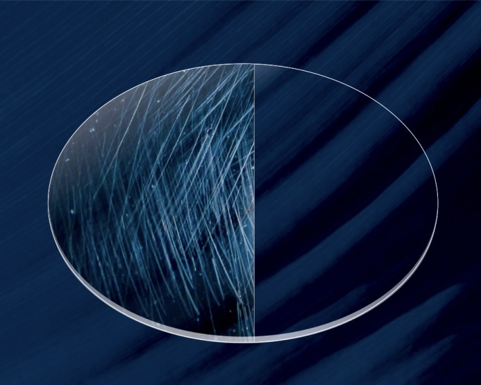

Bakım & Tamir
Gözlüklerinize ücretsiz bakım ve tamir hizmeti
Optik Çerçeveler
Yüz hatlarınıza uygun çerçeve seçimi
Optik Cam
Gözleriniz için kaliteli ve sağlıklı optik camlar
KALİTE & GÜVENCE
İTHAALATÇI BAYİ GARANTİLİ GÜNEŞ GÖZLÜKLERİ VE ÇERÇEVELER
OPTİK CAM ÇEŞİTLERİ
Göz sağlığınız için tercih edebileceğiniz cam çeşitlerimiz

BLUE CUT
Ultraviyole ışınlarını filtreler. Mavi/Mor ışığı engeller ve ışığa karşı hassasiyeti ortadan kaldırır.
ANTI-REFLE
Gözlük camında meydana gelen ışık yansımaları tamamen kaldırır ve daha iyi bir görüş sağlar

MİNERAL CAM
Çizilmez cam olmasıyla öne çıkar ve daha uzun ömürlü kullanıma sahiptir